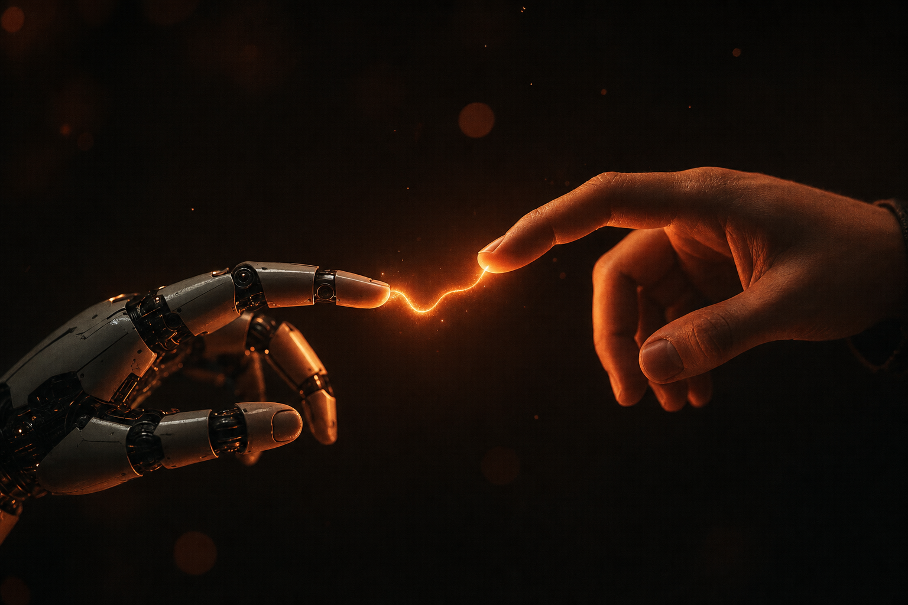

人与智能之间,最短的距离是理解。
从一句话,到一张图,到一段会呼吸的画面——这就是东西在我们这里诞生的方式。
Extreme close-up: a human hand and a robot hand almost touching, a thread of warm light arcing between fingertips, dark background.
A thread of light flickering alive between fingertips, slow pulse, micro camera drift.

“理解不是算出来的。
是靠近时,不缩回的那只手。”
两只手之间的那道光,是这部习作的全部叙事。我们让它闪烁得像一次心跳——不确定,但真诚。
周期与报价透明。四种语言版本,不加倍收费——因为管线在我们自己手里。
开始一次委托 →